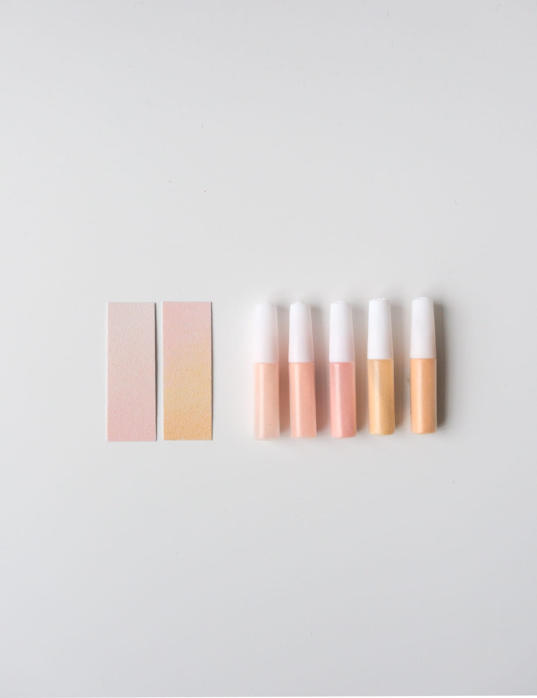

漸層沙・自選色
加購專屬・12 色任選
色號（12 選 1）
$150
目前選擇：暖杏（淺膚、膚、深膚、麥芽、薑黃）
1
適合誰加購？
想在基礎配色上，多加一點漸層的層次感？可以選擇我們搭配好的漸層色沙。
每組精選 5 種協調的顏色，可以做出兩種不同深度的漸層。不用自己調色，也不用煩惱配色，讓作品多一層細緻的深淺變化。
適用於所有春聯砂畫材料包，可依喜歡的色系自由加購。
漸層效果，做給你看
將不同深淺的色沙分層鋪上，讓同一個區塊慢慢暈出色彩變化。
12 組色號一覽
每組都是協調好的五階漸層，選色時可以對照下面的色名，或跟「砂畫・24色任選組」比較想要哪一種色系。
- 暖杏
- 淺膚、膚、深膚、麥芽、薑黃
- 芥褐
- 柳黃、芥黃、黃棕、淺棕、棕
- 森綠
- 淺松、綠、翠綠、深綠、墨綠
- 海藍
- 冰藍、蔚藍、虹藍、孔藍、寶藍
- 苔玉
- 淺綠、玉綠、豆青綠、深松、苔綠
- 夕橙
- 洋黃、桔黃、桔紅、紅、珊瑚紅
- 墨灰
- 白、淺灰、深灰、墨藍、黑
- 湖青
- 天青、青、松石綠、湖綠、孔綠
- 櫻粉
- 淺粉、粉紫、粉紅、百花粉、洋紅
- 藤紫
- 藤紫、紫、油紫、紫羅藍、酞青藍
- 胭脂
- 粉、百花粉、桃粉、玫紅、栗紅
- 春芽
- 米黃、明黃、艾綠、碧綠、湖綠
材料保存
沙粒開封後請保持乾燥，避免受潮結塊，建議於陰涼乾燥處保存。